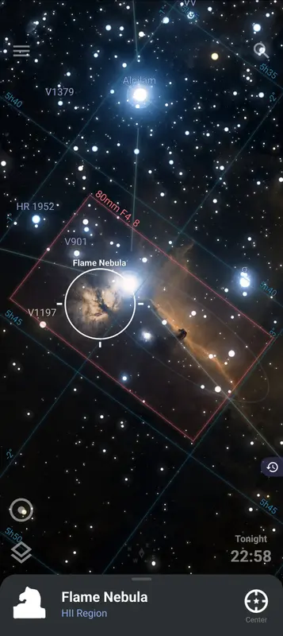
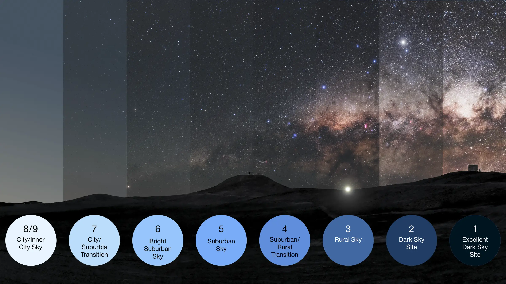
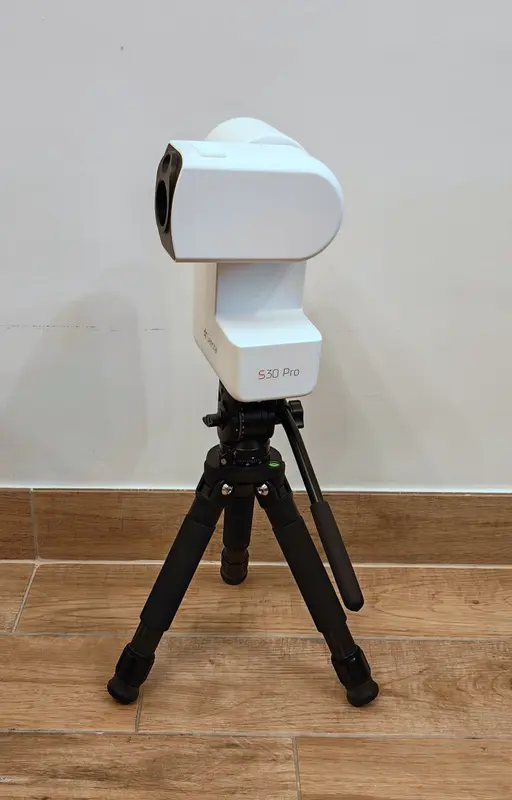
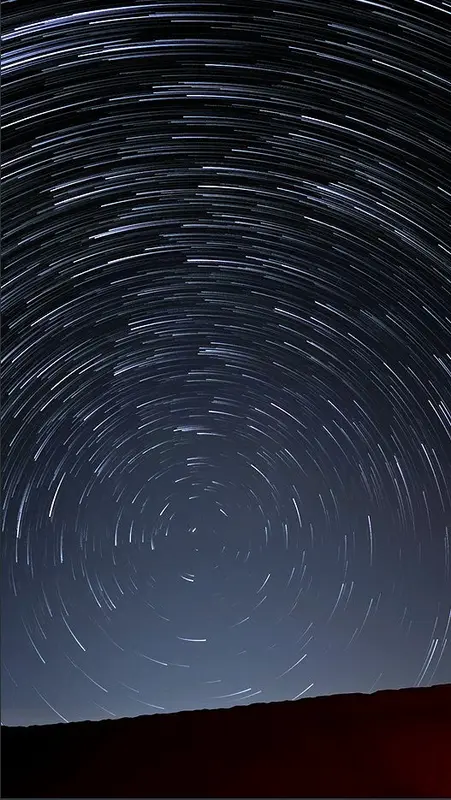
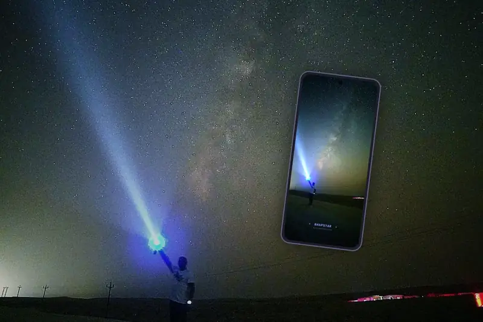
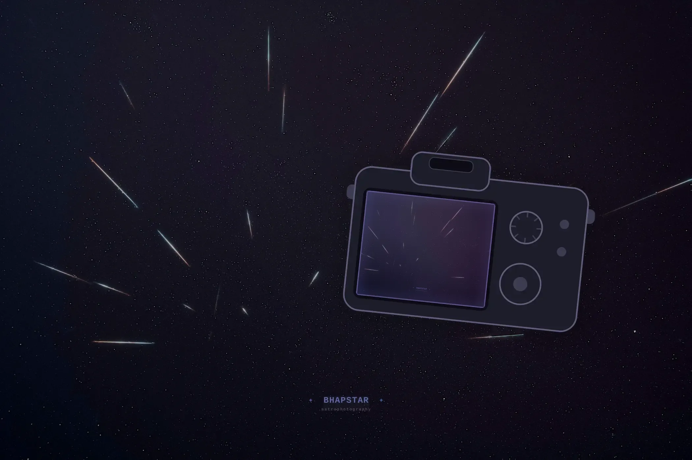
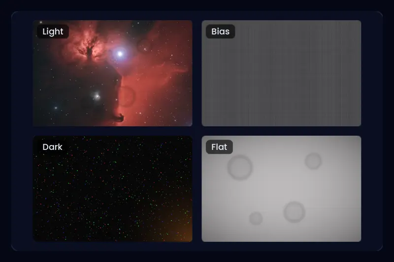
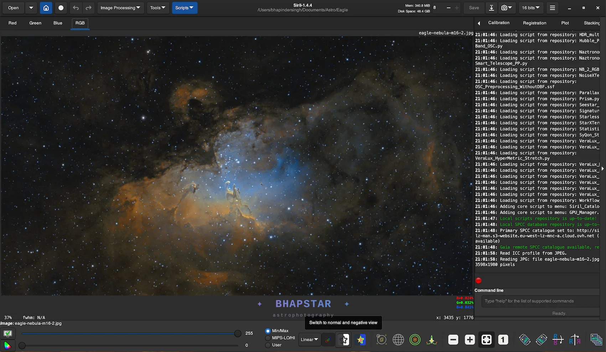
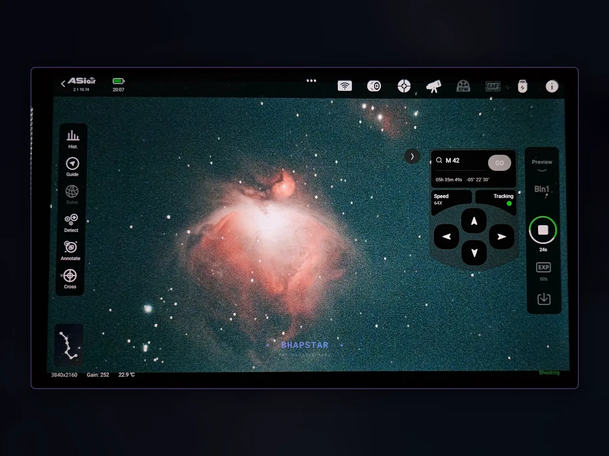

Articles
Write-ups on how the images on this site get made: the gear, the capture, and the processing that turns a night of data into a picture. Each one sets out the steps and the settings I use, in the order I use them.

How I Plan Every Astrophotography Session Using Stellarium
The software I open before every session. What is up tonight, how high it gets, when it is highest, and whether it will actually fit inside the frame.
9 min read

The Bortle Scale of Night-Sky Brightness and Light Pollution
Why a city sky buries a nebula instead of dimming it, how to score your own sky from one to nine tonight, and what 7nm and 3nm narrowband filters really do about it.
9 min read

The Seestar S30 Pro: A Whole Observatory in a Shoulder Bag
Deep sky and the Milky Way from the same 1.65kg box. Why the dual-lens Pro changed which rig I actually carry, and where a 30mm aperture stops.
8 min read

The Rig: A Mount, a Refractor, and a Camera That Runs Itself
A tour of the setup that takes every deep-sky image on this site. Why the mount has no counterweight, why the camera replaced a laptop, and how the whole thing runs all night on eleven watts.
8 min read

Navigating the Night Sky: Polaris, the Poles and the Lines Between Them
The sky is a giant ball and you are standing in the middle of it. How to find Polaris, why the south has no north star, and what the celestial equator and the meridian actually are.
6 min read

Photographing the Milky Way and Meteor Showers with Your Phone
No camera and no experience needed, just a phone, a small tripod and a dark sky. How to photograph the Milky Way and catch meteors on the same night, with the settings to use on an iPhone or an Android.
8 min read

How to Photograph the Milky Way and Meteor Showers with a Camera
One wide lens on a tripod collects the Milky Way and any meteor that crosses it. Where to point, what to set, and how one night's frames give you a meteor shot, a Milky Way and a star trail.
9 min read

Calibration Frames (Darks, Flats and Biases): The Images That Are Not Photographs
What calibration frames actually are and what they remove, how to take each one, and why the flats are the ones that catch everybody out. Twenty minutes that decide the picture.
7 min read

Siril: From a Folder of Subframes to a Finished Image
The free, open-source route from raw data to a finished picture. Calibration, stacking, and the one rule about stretching that quietly ruins images when it is broken.
9 min read

The ASIAir: Running a Whole Rig From Your Phone
Plate solving, autofocus, guiding and an unattended imaging plan, all driven from a handset. What the box does, the order a night actually runs in, and where the closed ecosystem bites.
7 min read